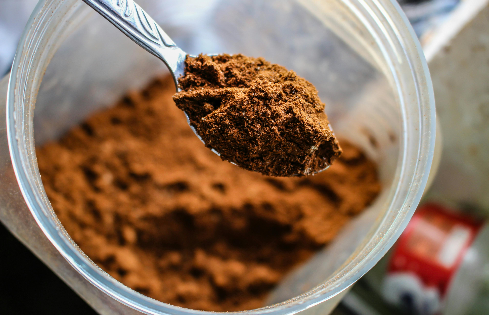
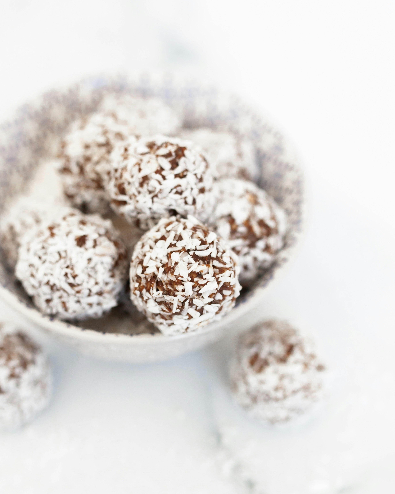

Kakaolu Fındık Topları Tarifi
Malzemeler :
- 1 su bardağı fındık

- 1/2 su bardağı hurma (çekirdekleri çıkarılmış)

- 2 yemek kaşığı kakao

- 1 yemek kaşığı bal

- 1 çay kaşığı vanilya özütü

Yapılışı :
- Fındıkları robotta un haline getirin.
- Hurmaları, kakaoyu, balı ve vanilya özütünü ekleyip karıştırın.
- Karışımdan küçük toplar yapın.
- Topları Hindistan cevizi veya kakao tozuna bulayarak servis edin.
Tatlımız Hazır :

Anasayfa